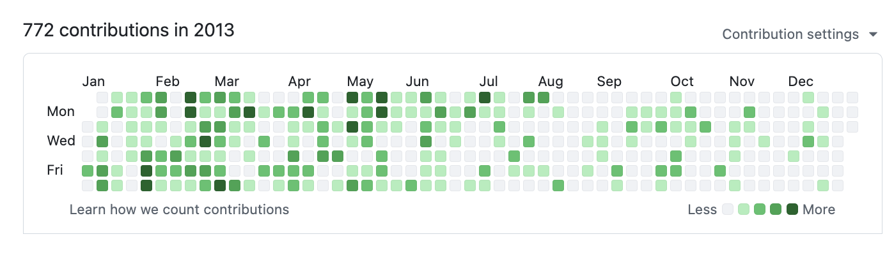
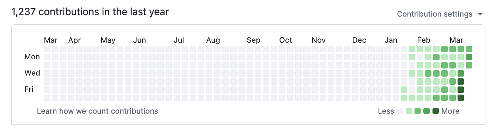

gstack is your AI engineering team
Twenty-three specialists. One slash command.
$ git clone https://github.com/garrytan/gstack.git ~/.claude/skills/gstack && cd ~/.claude/skills/gstack && ./setup
See it work
Terminal demo transcript: User says: I have an idea for a better onboarding flow. Let's start. User runs /office-hours. Result: 6 forcing questions later, scope locked, user journey mapped, risks flagged. User runs /plan-ceo-review. Result: Rethinks the problem, finds the 10-star version, cuts 3 unnecessary steps. User says: Good. Build it, then ship it. User runs /ship. Result: Tests 42 to 51, plus 9 new. Pull request created.
The sprint
Each skill feeds into the next. Nothing falls through the cracks.
Built by a builder
I'm Garry Tan, President & CEO of Y Combinator. I've worked with thousands of startups, Coinbase, Instacart, Rippling, when they were one or two people in a garage. Before YC, I was one of the first eng/PM/designers at Palantir, cofounded Posterous (sold to Twitter), and built Bookface, YC's internal social network.
gstack is how I ship. In the last 60 days: 600,000+ lines of production code, 10,000-20,000 lines per day, part-time, while running YC full-time. Same person. Different era. The difference is the tooling.


I open sourced how I build software. Fork it. Improve it. Make it yours.